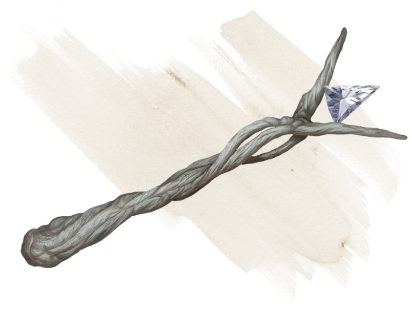

Baguette de détection de l'ennemi
Baguette, rare (nécessite un lien)
Cette baguette possède 7 charges. Lorsque vous la tenez, vous pouvez utiliser une action pour dépenser 1 charge et prononcer son mot de commande. Pendant 1 minute, vous connaissez la direction de la créature hostile la plus proche de vous dans un rayon de 18 mètres, mais pas sa distance. La baguette détecte la présence de créatures hostiles cachées, invisibles, éthérées ou déguisées, de même que celles en pleine vue. L'effet cesse si vous ne tenez plus la baguette.
La baguette récupère 1d6 + 1 charges dépensées chaque jour à l'aube. Lorsque vous dépensez la dernière charge, lancez 1d20. Sur un 1, la baguette tombe en cendre et est détruite.
La baguette récupère 1d6 + 1 charges dépensées chaque jour à l'aube. Lorsque vous dépensez la dernière charge, lancez 1d20. Sur un 1, la baguette tombe en cendre et est détruite.
Dungeon Master´s Guide (SRD)
